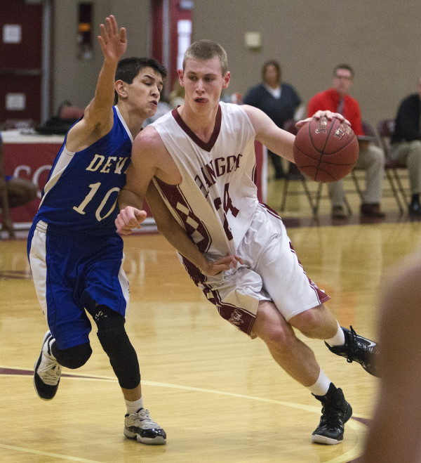
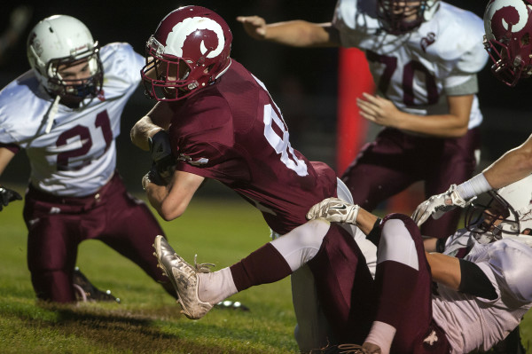

My varsity football career was only my freshman and senior year because I focused on only basketball for a couple of years. During my senior season I scored four touchdowns and had more than 300 receiving yards as a tight end. My coach was Al Mosca who was also my freshman football coach. His first varsity season was my senior year which was a big reason in my decision to return to football.